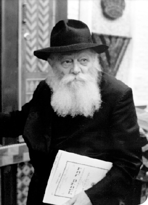

בכניסה לארץ בגאולה העתידה — הרי תיכף ומיד “ושבתה הארץ שבת לה”’ כפשוטו: ורק לאחר
בכניסה לארץ בגאולה העתידה — הרי תיכף ומיד “ושבתה הארץ שבת לה”’ כפשוטו: ורק לאחר זה, מכיון שצריך להיות דירה בתחתונים דוקא, יהי’ גם “שש שנים תזרע שדך”. — באופן ד”ועמדו זרים ורעו צאנכם ובני נכר אכריכם” • משיחת שבת פרשת אמור, ערב ל”ג בעומר תשמ”ז
בכניסה לארץ בגאולה העתידה — הרי תיכף ומיד “ושבתה הארץ שבת לה”’ כפשוטו: ורק לאחר זה, מכיון שצריך להיות דירה בתחתונים דוקא, יהי’ גם “שש שנים תזרע שדך”. — באופן ד”ועמדו זרים ורעו צאנכם ובני נכר אכריכם” • משיחת שבת פרשת אמור, ערב ל”ג בעומר תשמ”ז

והענין בזה:
בהתחלת פרשת בהר נאמר — “כי תבואו אל הארץ אשר אני נותן לכם ושבתה הארץ שבת לה’”.
וידועה הקושיא: מכיון שקיום מצות השמיטה, “ושבתה הארץ שבת לה’”, אינו אלא לאחרי שבע שכבשו ושבע שחלקו, ולאחרי ההקדמה ד”שש שנים תזרע שדך ושש שנים תזמור כרמך”, שאז, “ובשנה השביעית שבת שבתון יהי’ לארץ שבת לה’” (כמפורש בהמשך הכתובים) — מדוע נאמר “כי תבואו אל הארץ גו’ ושבתה הארץ גו”’, היינו, שתיכף ומיד בכניסה לארץ (“כי תבואו אל הארץ”) אזי “ושבתה הארץ שבת לה”’?!
והביאור בזה — שתיכף ומיד בכניסה לארץ צריכים לדעת שתכלית הכוונה היא “ושבתה הארץ שבת לה”’, שאז, גם העבודה ד”שש שנים תזרע שדך גו”’ חדורה בכוונה הפנימית ד”ושבתה הארץ שבת לה”’.
כלומר: אין הכוונה על החלטה בלבד, שמחליט שכאשר תבוא השנה השביעית אזי ושבתה הארץ — שהרי החלטה זו קיבל כל חד ואחד מישראל תיכף ומיד בעת אמירת הציווי “בהר סיני”, שמאז והלאה נעשה כן רצונו האמיתי דכל אחד ואחד מישראל עד סוף כל הדורות (כידוע פסק–דין הרמב”ם), ולא על זה קאי הכתוב, כי אם, על ענין השייך רק לאחרי הכניסה לארץ, כפשטות הכתוב “כי תבואו אל הארץ (אזי) ושבתה הארץ גו’”! הכוונה היא, איפוא, לענין של עבודה בפועל בכניסה לארץ, שתיכף ומיד “כי תבואו אל הארץ”, צריכים להיות חדורים בכוונה הפנימית ד”ושבתה הארץ שבת לה’”, דבר הבא לידי ביטוי בפועל באופן העבודה ד”שש שנים תזרע שדך גו”’.
דוגמא לדבר בהלכה — בנוגע ליום השבת — “זכור את יום השבת לקדשו וגו’, דרשו בית שמאי שתהא זוכרו מאחד בשבת, שאם נזדמן לך חלק יפה תהא מתקנו לשבת, ואמרו עליו על שמאי הזקן שכל ימיו הי’ אוכל לכבוד שבת, כיצד, מצא בהמה נאה, לוקחה ואומר זו לשבת, מצא אחרת נאה הימנה, לוקחה ומניחה לשבת, ואוכל את הראשונה בחול, נמצא אוכלה לזו כדי שהיפה תאכל בשבת”. ומזה מובן גם בנוגע לשנה השביעית — שבת בשנים, “ושבתה הארץ שבת לה’”, “כשם שנאמר בשבת בראשית” — שבכל ששת השנים צריך להיות (בפועל) ההכנה ל”ושבתה הארץ שבת לה”’.
ב. ביאור הענין בעבודת האדם:
איתא בזהר — “חיבורא דילך” — ש”תלמיד חכם איקרי שבת” (כמרומז גם בגמרא — במסכת שבת).
ועל–פי האמור אודות ההדגשה ד”להזהיר גדולים על הקטנים” — יש לבאר ענין זה בפשטות, באופן המובן גם לקטנים.
ובהקדמה, שהביאור לקטנים צריך להיות מכוון לאמיתתה של תורה — כידוע גודל הזהירות לומר לקטן דבר שאינו אמיתי, כלומר, מלבד גודל הזהירות מענין של שקר, עד כדי כך, שהזהירה תורה “מדבר שקר תרחק” (לא רק שאסור לומר דבר שקר, אלא שצריכים להתרחק מאפשרות של דבר שקר), צריכה להיות זהירות יתירה שלא לומר דבר שאינו אמיתי לקטנים, כי, “הילדים סבורים שכל דבריך אמת”, ואינם מקבלים תירוצים ואמתלאות כו’ —
אלא, שהביאור הוא בסגנון המתאים לפי־ערך שכלו של הקטן, על ידי זה שמלבישים את השכל “משל”, עד ל”שלשת אלפים משל”, היינו, שהשכל יורד ונמשך מדרגא לדרגא, ג’ אלפים דרגות כו’, אשר, בכל פרטי הדרגות דהמשל נמצא גם הנמשל, שהוא התוכן הפנימי והנשמה דכל המשלים.
ובנוגע לעניננו — ש”תלמיד חכם אקרי שבת” הוא–ענין המובן בפשטות גם לקטנים:
החילוק שבין יום השבת לששת ימי המעשה הוא — “המבדיל בין קודש לחול .. בין יום השביעי לששת ימי המעשה”, היינו, שבימי החול עסוקים בעובדין דחול, ואילו ביום השבת עסוקים אך ורק בעניני קדושה, תורה ומצוותי’.
ומכיון שתלמיד חכם עסוק גם בימי החול (לא בעובדין דחול, אלא) בלימוד התורה — הרי, במשך כל ימי השבוע נמצא במעמד ומצב דיום השבת, ולכן נקרא בשם שבת: “א שבת’דיקער איד”.
ועל פי זה מובן הקשר והשייכות לל”ג בעומר, יום ההילולא דרשב”י — מכיון שאצל רשב”י מודגש ביותר ש”איקרי שבת”, מכיון ש”תורתו אומנותו”.
ג. ויש להוסיף, שהענין ד”תלמיד חכם איקרי שבת” (לא זו בלבד שמובן לקטנים, אלא יתירה מזה) שייך במיוחד לקטנים — “להזהיר גדולים על הקטנים” — כשם שכמה וכמה מנהגים בל”ג בעומר הם בקשר ובשייכות לקטנים דוקא:
מטבע הדברים, שהקטנים אינם מתעסקים בעניני העולם, פרנסה וכו’, אלא, הוריהם מספקים להם כל צרכיהם מן המוכן, ובמילא, יכולים לעסוק כל היום בלימוד התורה, “תורתם אומנותם”, ולכן, הרי הם בבחינת “שבת”.
ליתר ביאור:
ילד קטן, שאינו צריך לעסוק בעניני פרנסה — מבין בפשטות שלא יתכן שבגלל זה ילך בטל, שהרי “לא ברא הקב”ה דבר אחד לבטלה”, במכל–שכן וקל–וחומר מבשר ודם, שאם הוא רק נורמלי, בודאי לא יעשה דבר מסויים ללא מטרה ותכלית.
ולהוסיף, שענין זה מודגש אצל ילד קטן יותר מאשר אצל מבוגר — מכיון שרוצה מטבעו לראות את המטרה והתכלית תיכף ומיד. כלומר: אדם מבוגר — יכולים להסביר לו ולפעול עליו לעשות דבר מסויים גם כאשר יצטרך להמתין עד שהמטרה והתכלית תבוא לידי פועל, ולדוגמא, בנוגע לענין השכר — “היום לעשותם ולמחר לקבל שכרם”; מה שאין כן ילד קטן — אינו יכול להמתין, אלא מתעקש לראות את המטרה והתכלית תיכף ומיד.
ומכיון שכן, ברור הדבר שעובדת היותו פנוי מדאגות הפרנסה, היא — לא כדי שילך בטל, ח”ו, אלא אדרבה — כדי שינצל את כל זמנו להתייגע בעניני קדושה, בהתאם לתכלית בריאתו — “אדם לעמל יולד”, “לשמש את קוני”, באופן ד”תודתו אומנותו”.
ולהעיר, שענין זה מודגש גם בשמם — “תינוקות של בית רבן”, כלומר, שנקראים לא על שם הוריהם, אלא על שם “בית רבן”, מכיון שכל מציאותם היא — לימוד התורה, “תורתם אומנותם”, בחינת “שבת”.
ובכללות יותר — שייך ענין זה לכל ישראל, שכן, ביחס לאומות העולם, הרי, כל ישראל הם בבחינת שבת, כאמור, “המבדיל בין קודש לחול .. בין ישראל לעמים בין יום השביעי לששת ימי המעשה”.
ד. על פי זה יש לבאר גם את הענין ד”כי תבואו אל הארץ גו’ ושבתה הארץ שבת לה’” — בעבודה הרוחנית:
כשם שבמשך העבודה ד”שש שנים תזרע שדך” צריך להיות חדור בענין ד”ושבתה הארץ שבת לה’”, כן הוא גם בנוגע לימי השבוע — שההתעסקות בעובדין דחול בששת ימי המעשה צריכה להיות חדורה בענין השבת (קדושה), היינו, לעשות מהם עניני קדושה — “כל מעשיך יהיו לשם שמים”, “בכל דרכיך דעהו”.
וענין זה מודגש ביותר אצל אלו שבמשך כל ימי השבוע נמצאים במעמד ומצב דשבת — “תלמיד חכם איקרי שבת” — מכיון שכל עבודתם היא באופן ד”ושבתה הארץ שבת לה”’.
ובאופן כזה יש לחנך גם את הקטנים — כמודגש בזה שלפני פרשת בהר, “כי תבואו אל הארץ גו’ ושבתה הארץ שבת לה”’, מקדימים לקרוא פרשת אמור, “אמור ואמרת להזהיר גדולים על הקטנים”.
ויש לקשר ענין זה עם המדובר לאחרונה על–דבר ההשתדלות בנוגע לילדי ישראל — “להזהיר גדולים על הקטנים” — שכל אחד ואחת מהם יעשה מחדרו, שולחנו מטתו וכלי תשמישו, “חדר צבאות ה’”, “בית חב”ד”, “בית תורה תפלה וגמ”ח” — שגם עניני הרשות, שאין מברכים עליהם כו’, יהיו חדורים בקדושה ואלקות, משכן ומקדש לו יתברך.
ולהוסיף, שעל ידי זה נפעל גם אצל הגדולים — “להזהיר גדולים על (ידי) הקטנים”, “והשיב לב אבות על (ידי) בנים” — כפי שרואים במוחש שכאשר ילד קטן מספר להוריו, בחיות והתלהבות כו’, שעשה מחדרו, שולחנו ומטתו כו’, בית לה’, ומוסיף, שבודאי עשו גם הם כן מכל הבית כולו, הרי זה עושה רושם חזק ביותר על ההורים, ופועל עליהם לעסוק בענין זה, אפילו אם עד עתה לא הכירו בגודל החשיבות וההכרח דפעולה זו, למרות היותם כבר בגיל ד”בן ארבעים לבינה”… עד שנתרשמו מפעולתו של הילד הקטן.
ה. והנה, נוסף על האמור לעיל בפירוש ד”כי תבואו אל הארץ גו’ ושבתה הארץ שבת לה’”, שהכניסה לארץ חדורה בכוונה הפנימית ד”ושבתה הארץ שבת לה’” — יש לפרש גם כפשוטו ממש, ביחס לכניסה לארץ בגאולה העתידה:
הכניסה לארץ בגאולה העתידה לא תהי’ באופן של כיבוש ומלחמה, כבכניסה לארץ בפעם הראשונה, שבע שכבשו ושבע שחלקו — אלא, מתוך מנוחה, “בשובה ונחת”, ותיכף ומיד.
ונוסף לזה, לא יצטרכו לעבודה ד”שש שנים תזרע שדך ושש שנים תזמור כרמך” — שהרי “עתידה ארץ ישראל שתוציא גלוסקאות וכלי מילת”, אשר, עם היותם “גלוסקאות וכלי מילת” שיצאו מ”הארץ” (לא מהשמים), מכל–מקום, לא יהי’ צורך בפעולה טבעית כדי להשיגם, מכיון שארץ ישראל תוציאם בדרך נס, כך, שלא יהי’ צורך להמתין משך זמן.
[בנוגע ללידה, “עתידה אשה שתלד בכל יום” — הרי, מכיון שצריך להיות עיבור תחלה, לכן, גם לעתיד לבוא יהי’ דרוש משך זמן, אלא, שבמקום ט’ חדשים יהי’ העיבור במשך ט’ שעות (כמבואר ברשימות הצ”צ), אמנם, בנוגע ל”גלוסקאות וכלי מילת”, מכיון שלא שייך בהם ענין העיבור, לא יהי’ צורך להמתין ט’ שעות, ואפילו לא ט’ רגעים, אלא, תיכף ומיד ממש].
ועל פי זה, בכניסה לארץ בגאולה העתידה — מכיון שלא יצטרכו להמתין לכיבוש וחלוקה, ולשש שנים של עבודה בשדה ובכרם — הרי תיכף ומיד “ושבתה הארץ שבת לה”’ כפשוטו: ורק לאחר זה, מכיון שצריך להיות דירה בתחתונים דוקא, יהי’ גם “שש שנים תזרע שדך”. — באופן ד”ועמדו זרים ורעו צאנכם ובני נכר אכריכם”.
וגם ענין זה שייך במיוחד לרשב”י, בעל ההילולא דל”ג בעומר — על–פי המסופר בחז”ל שרשב”י הי’ “מלומד בנסים” (שלכן שלחוהו לרומי כו’), ועד כדי כך, שאצל רשב”י לא הי’ ענין של חורבן וגלות (כפתגם אדמו”ר הזקן), ועוד ועיקר, כאמור, ש”בהאי חיבורא דילך .. יפקון בי’ מן גלותא ברחמים”, שאז יהי’ “כי תבואו אל הארץ גו’ ושבתה הארץ שבת לה’” — כפשוטו ממש.
ו. ויהי רצון שעל–ידי מעשינו ועבודתינו באופן ד”ושבתה הארץ שבת לה”’, שעושים מכל עניני ארץ “שבת לה’” — נזכה לקיום היעוד “כי תבואו אל הארץ גו’ ושבתה הארץ שבת לה’” בפועל ממש.
ועד כדי כך, שהעולם כולו יזעק — “אבן מקיר תזעק” — “שבת לה”’, כדאיתא במדרש “לעתיד לבוא אם אדם הולך ללקוט תאנה בשבת היא צווחת ואומרת שבת היום”, ועל דרך זה בנוגע לשנת השמיטה, “שבת לה’”.
ומזה באים לפרשת בחוקותי — “בחוקותי תלכו ואת מצוותי תשמרו ועשיתם אותם”,
כולל גם הפירוש הפנימי — שהעבודה היא באופן של חקיקה (“בחוקותי”), ובאופן של הליכה (“תלכו”), עד לענין ד”ועשיתם אותם”, כפירוש הזהר “ועשיתם אותם, אתם כתיב”, כמו שכתוב “אשר יעשה אותם האדם”, “שהאדם עושה אותם להיות מצוות”, ובאופן ד”וחי בהם”, שממשיך בהם חיות כו’ (כתורת המגיד),
וכידוע סיפור החסידים שציציותיו של הבעש”ט היו מתנענעים כדבר חי, וחיות זו נפעלה בדומם דוקא, שהרי על–פי הלכה צריכים הציצית להיות מדומם (לאחרי גז הצמר), וביחד עם זה נעשה בהם חיות כדבר חי ממש. ומכיון שסיפור זה נמסר לחסידים, ועל ידם לכל העולם כולו — הרי זה לימוד והוראה לכל אחד ואחד מישראל שצריך לפעול ולהכניס חיות בהמצוות.
ועל ידי זה זוכים לכל הברכות שבפרשה — “ונתתי גשמיכם בעתם וגו”’, עד לסיום הפרשה — “ואולך אתכם קוממיות”.
ובכל זה ניתוסף עוד יותר ב”יום זכאי”, יום שמחתו של רשב”י, אשר, “כדאי הוא ר’ שמעון לסמוך עליו בשעת הדחק”, היינו, שכאשר נמצאים “בשעת הדחק” דזמן הגלות, סומכים ונשענים (“מ’שפאַרט זיך אָן”) על רשב”י — לא רק ענין של תפלה ובקשה, השתטחות על הציון וכו’, כי אם, “לסמוך עליו” ממש.
ובפשטות — שבודאי יוצאים מהגלות בזכותו של רשב”י, “בהאי חיבורא דילך .. יפקון בי’ מן גלותא ברחמים”, כאמור, “כי תבואו אל הארץ”, כניסה לארץ ישראל בפועל ממש, ובאופן ד”ואולך אתכם קוממיות”, כן תהי’ לנו — בגאולה האמיתית והשלימה על–ידי משיח צדקנו, בעגלא דידן ממש.